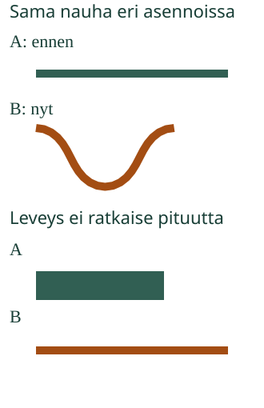

<link rel="stylesheet" href="lesson.css" />

<section data-teaching-step="1" data-lesson-role="teaching-step">
<section class="lesson-intro"><h2>Riittääkö mutkainen nauha?</h2><p>Aava tarvitsee nauhan viiriin. Nauha meni mutkalle. Onko se nyt lyhyempi?</p><p><strong>Tutkin nauhan pituutta.</strong></p></section>
</section>


<section data-teaching-step="2" data-lesson-role="teaching-step">
<section><h2>Kokeile oikealla nauhalla</h2><p>Ota paperisuikale tai venymätön naru. Taivuta sitä. Oikaise taas. Mitään ei leikattu eikä lisätty: nauha on yhtä pitkä.</p><figure data-lesson-role="worked-example"><figcaption>Seuraa koko nauhaa. Leveys ja päiden välinen suora väli ovat eri asioita kuin nauhan pituus.</figcaption></figure><h3>Leveä ei aina ole pitkä</h3><p>Pane suorat nauhat samaan alkukohtaan. Vertaa loppupäitä. Leveä nauha voi olla lyhyempi.</p><h3>Kaksi eri polkua</h3><p>Suora polku ja mutkapolku voivat alkaa ja päättyä samoissa paikoissa. Mutkapolkua pitkin on silti pidempi matka. Ne ovat kaksi eri reittiä.</p></section>
</section>


<section data-teaching-step="3" data-lesson-role="teaching-step" id="pituuden-vertailu" data-audience-spacing="compact">
<section data-length-lesson hidden data-lesson-context-source="workbench"><div data-audience-columns><div data-visual-column><h2>Tutki ja vertaa</h2><p>Ennusta ensin. Voit muuttaa kuvaa painikkeista.</p><label>Vertailu<select data-case><option value="0">Sama nauha mutkalle</option><option value="1">Leveä vai pitkä?</option><option value="2">Kaksi eri reittiä</option><option value="3">Kaksi palaa yhteensä</option><option value="4">Pala otetaan pois</option></select></label><div data-model></div><p data-model-note></p></div><div data-response-column><p><button type="button" data-action="step">Taivuta vähän</button><button type="button" data-action="straight">Oikaise</button></p><p><strong data-question>Kumpi on pidempi?</strong></p><div class="answers"><button type="button" data-answer="A" aria-pressed="false">A</button><button type="button" data-answer="B" aria-pressed="false">B</button><button type="button" data-answer="same" aria-pressed="false">Yhtä pitkät</button></div><p>Valittu vastaus on kehystetty. Paina samaa vastausta, jos haluat poistaa sen.</p><button type="button" data-action="check">Tarkista</button><p data-feedback role="status" aria-live="polite">Tutki ja kokeile.</p></div></div></section>
<details data-lesson-role="hint"><summary>Apua</summary><p>Seuraa nauhaa sormella alusta loppuun. Oikaise mutka. Kohdista suorat nauhat samaan alkuun. Kysy: lisättiinkö nauhaa tai otettiinko pala pois?</p></details>
</section>


<section data-teaching-step="4" data-lesson-role="teaching-step">
<details data-lesson-role="teaching-step"><summary>Kokeile lisää: kaksi palaa</summary><p>Jos nauha leikataan kahtia, kaksi palaa yhteensä ovat yhtä pitkät kuin nauha oli. Allekkain siirtäminen ei poista kumpaakaan palaa. Jos pala viedään pois, jäljelle jäävä nauha on lyhyempi. Alla oleva kokeilu alkaa kahdesta palasta. Voit valita sen valikosta myös tilanteen ”Pala otetaan pois”.</p>
<details data-lesson-role="worked-example" data-lesson-context="length-cut" data-context-source="workbench" data-context-preset="cut" data-context-reveal="model"><summary>Tutki kahta palaa tässä</summary><p data-context-fallback>Malli on ilman JavaScriptiä alkuperäisessä kohdassaan: <a href="#pituuden-vertailu">avaa mallin kohta</a>.</p><div data-context-slot></div><button type="button" data-context-close hidden>Sulje malli</button></details>
</details>
</section>

<details class="teacher" data-lesson-role="teacher-note"><summary>Opettajalle ja ilman ruutua</summary><p>Luokat 1–2. Vaadittu esitieto M-MEAS-00: suora vertailu yhteisestä alusta. Tavoite on pituus ominaisuutena, erityisesti nauhan kuljettu pituus suhteessa päiden suoraan etäisyyteen. Leveys ei ole pituus. Nauhan pitää olla venymätön: venyttäminen voi muuttaa oikean narun pituutta. Kaikki taivuttaminen ei säilytä kaikkien esineiden mittoja.</p><p>Malli on samanpituisten jäykkien janaosien ketju. Kunkin janaosan ja koko ketjun pituus säilyvät joka askeleella. Nauhan pituutta kuvaa keskiviiva merkittyjen päiden välillä. Kahteen osaan leikkaus on ihanteellinen: leikkaus ei poista materiaalia. Reittien vertailussa kummallakin omalla reitillä on oma säilyvä pituutensa. A:n vertailukuva ei tarkoita, että materiaalia lisätään B:hen.</p><p>Offline: taivuttakaa venymätöntä narua ja oikaiskaa se saman vertailusuikaleen viereen. Kiertäkää naru kirjan ympäri. Näyttäkää leikkaaminen aikuisen kanssa. Lapsi voi osoittaa tai selittää; ruutu ei tarkista hänen puhettaan. Ei mittayksiköitä, kertolaskua tai senttimetrilukemista. Lue ohje tarvittaessa ääneen. Lisähaaste: piirrä eri reittejä samoihin päätepisteisiin.</p><p>Tarkistus koskee näitä mallivertailuja. Tulos ei osoita fyysistä mittaamista, itsenäistä perustelemista, viivästettyä muistamista tai yleistä hallintaa. Vastauksia ei tallenneta eikä kerätä oppijahistoriaa. Mallin oikaisu säilyttää oikean vertailusuhteen; uusi tehtävä tai oma vastausmuutos palauttaa palautteen neutraaliksi.</p></details>
<section data-teaching-step="5" data-lesson-role="teaching-step">
<p data-lesson-role="question"><strong>Lopuksi:</strong> Mikä muuttui, kun nauha taipui? Miten tarkistat sen pituuden?</p>
</section>

